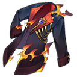

추천 광추
동트기 전
치피 +36% · 추가 공격 +48%
효과 자세히
스킬·필살기 피해 +18%. 사용 후 몽신 획득 → 다음 추가 공격 피해 +48%.
별이 밤하늘을 밝힐 때
상시 방어력 무시 32%
효과 자세히
전투 지원 스킬이 없는 캐릭터도 방어력 무시 효과 적용. 경원은 전투 지원 스킬 효과 없이 방무를 활용.
생명은 불태워야 하는 것
자기 턴 시작 에너지 +10pt · 적 방깎
효과 자세히
공격받은 적 방어력 −12% 2턴. 자신이 약점 부여한 적에게만 피해 +60%. 경원에게 약점 부여 전용 피해 증가는 적용되지 않음.
밀 내음이 가득한 꿈
치확 +20% · 필살기·추가 공격 피해 +40%
효과 자세히
필살기와 신군 모두 강화.
은하 함락의 날
공격력 +24% · 조건부 치피 +40%
효과 자세히
공격이 본인과 같은 약점 속성의 적 2기 이상 명중 → 치피 +40% 2턴.
추천 유물
재와 뼈마저 불사르는 대공 4 · 기묘한 나나 낙원 2
- 머리
 주옵션HP부옵션치명타 확률 · 치명타 피해 · 공격력% · 속도
주옵션HP부옵션치명타 확률 · 치명타 피해 · 공격력% · 속도 - 손
 주옵션공격력부옵션치명타 확률 · 치명타 피해 · 공격력% · 속도
주옵션공격력부옵션치명타 확률 · 치명타 피해 · 공격력% · 속도 - 몸통

주옵션치명타 확률 / 치명타 피해부옵션치명타 확률 (주옵션 제외) · 치명타 피해 (주옵션 제외) · 공격력% · 속도 - 다리
 주옵션공격력% / 속도부옵션치명타 확률 · 치명타 피해 · 공격력% (주옵션 제외) · 속도 (주옵션 제외)
주옵션공격력% / 속도부옵션치명타 확률 · 치명타 피해 · 공격력% (주옵션 제외) · 속도 (주옵션 제외) - 구체
 주옵션번개 속성 피해 / 공격력%부옵션치명타 확률 · 치명타 피해 · 공격력% (주옵션 제외) · 속도
주옵션번개 속성 피해 / 공격력%부옵션치명타 확률 · 치명타 피해 · 공격력% (주옵션 제외) · 속도 - 매듭
 주옵션공격력%부옵션치명타 확률 · 치명타 피해 · 속도
주옵션공격력%부옵션치명타 확률 · 치명타 피해 · 속도
이 조합을 추천하는 이유
대공 추가 공격 피해 +20% · 신군 연타로 공격력 중첩. 나나 낙원 신군 소환 중 치피 합계 +48%.
재와 뼈마저 불사르는 대공 4 · 회전을 멈춘 살소토 2
- 머리
주옵션HP부옵션치명타 확률 · 치명타 피해 · 공격력% · 속도
- 손
주옵션공격력부옵션치명타 확률 · 치명타 피해 · 공격력% · 속도
- 몸통 주옵션치명타 확률 / 치명타 피해부옵션치명타 확률 (주옵션 제외) · 치명타 피해 (주옵션 제외) · 공격력% · 속도
- 다리
주옵션공격력% / 속도부옵션치명타 확률 · 치명타 피해 · 공격력% (주옵션 제외) · 속도 (주옵션 제외)
- 구체
 주옵션번개 속성 피해 / 공격력%부옵션치명타 확률 · 치명타 피해 · 공격력% (주옵션 제외) · 속도
주옵션번개 속성 피해 / 공격력%부옵션치명타 확률 · 치명타 피해 · 공격력% (주옵션 제외) · 속도 - 매듭
 주옵션공격력%부옵션치명타 확률 · 치명타 피해 · 속도
주옵션공격력%부옵션치명타 확률 · 치명타 피해 · 속도
이 조합을 추천하는 이유
살소토 치확 50% → 필살기·신군 피해 +15%. 대공과 함께 활용.
이 정도면 잘 키웠다
동일 파티·광추 기준 · 조건 [*]
| 스탯 | 추천 스탯 | 준종결 | 종결 |
|---|---|---|---|
| 치명타 확률 · 피해 [*] 전투 스킬 후 치확과 서포터 치확 포함. 치피는 마을 수치. | 전투 치확 90% · 치피 140% | 전투 치확 100% · 치피 160% | 치확 100% 유지 · 치피 추가 |
| 속도 [*] 빠른 행동 지원으로 공격력 신발을 쓰거나 경원이 선데이 바로 앞. | 기초 속도 | −1 선데이 135/134 선택 | 신군과 아군 턴 조율 |
| 공격력 [*] EX 피해 증가가 활성화된 편성에서 공격력·방어력 무시 가치도 비교. | 2,600+ | 3,000+ | 3,000+ 유지 · 치피 보강 |
육성 단계의 기준
캐릭터·광추 Lv.80 · 5성 유물 +15. 발동 조건은 명시한 수치, 그 외는 육성 목표.
성혼과 추천 돌파
기연 성혼 보유 시 신군 최대 30단. 기본 1돌 인접 피해 · 4돌 신군 타격당 에너지.
1신군 인접 배율 추가추천
주 대상 피해 배율의 25%만큼 인접 피해 배율 추가.
2신군 행동 → 경원 일반 공격·스킬·필살기 피해 +20%
2턴.
3필살기 +2 · 일반 공격 +1
필살기·일반 공격 레벨 상한 각각 15·10.
4신군 공격 단수마다 경원 에너지 +2pt추천
백사에 떨어진 칼날에 감긴 구름
5전투 스킬·특성 +2
스킬·특성 레벨 상한 각각 15.
6신군 명중마다 적 받는 피해 +12%
적마다 최대 3스택. 이번 신군 공격 종료까지.
추천 파티


기본 운영과 행적
신군의 공격 단수를 쌓기
전투 스킬·필살기로 신군 단수 누적 → 신군 행동. 선데이로 경원과 신군 행동 조율.
- 기연 성혼 활성화 전 신군 상한 10단. 경원이 제어 상태면 신군이 행동할 수 없어 정화 우선.
행적 육성 순서
특성 → 전투 스킬·필살기 → 일반 공격
4.7 기연 성혼 · 만 균의 잔, 고요한 등불
신군 상한 30단 → 도달 시 즉시 행동. 전투 시작·신군 행동 시 4턴 강화 → 경원 피해 +240%, 스킬 +8단·필살기 +15단(기본 증가량 포함).
- 경원 보유 시 기본 성혼 돌파 단계와 관계없이 활성화 가능.
기준과 출처 · 2026-11-25
4.7 데이터 · 기연 성혼 및 Prydwen 장비